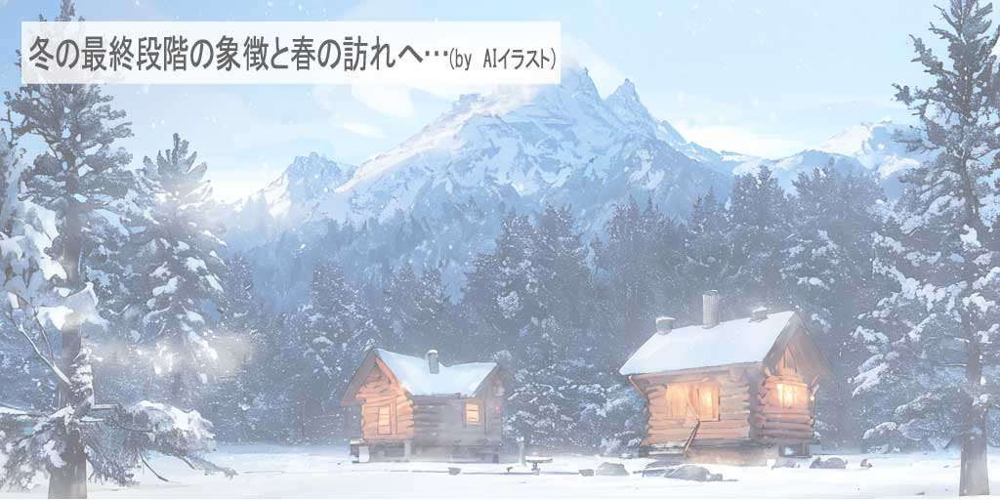
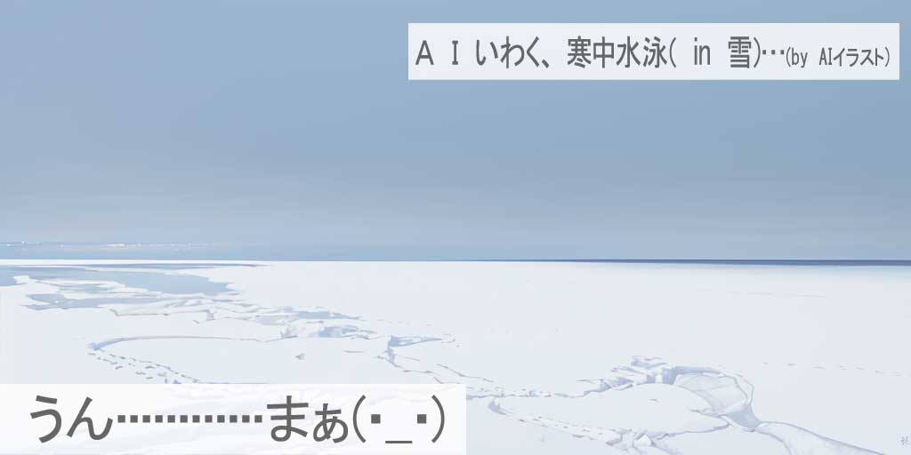
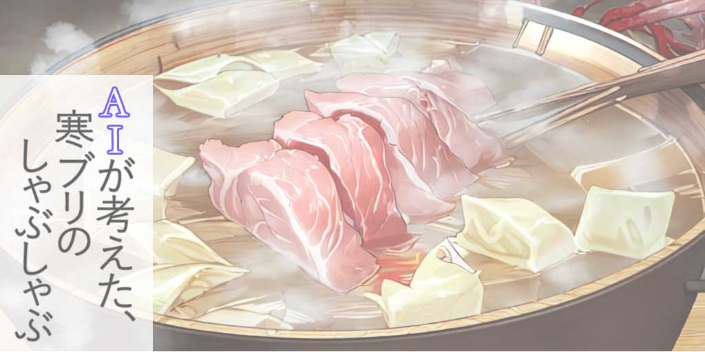
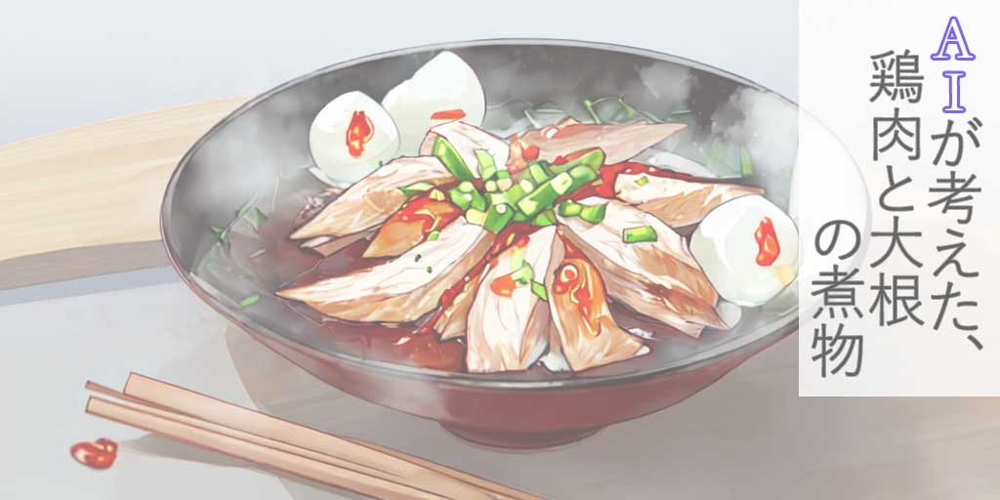
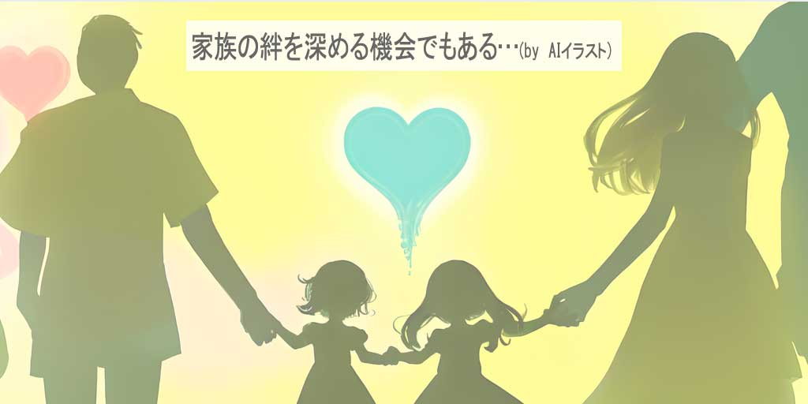
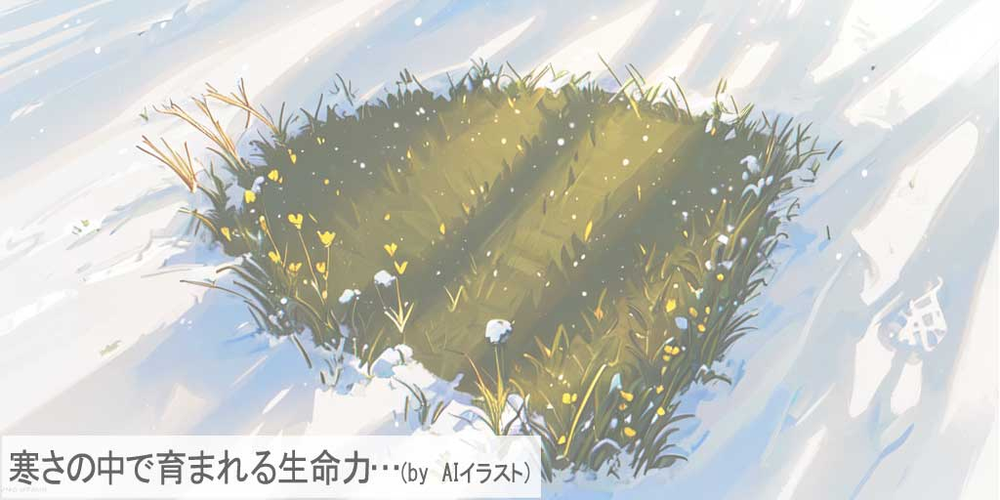

大寒（だいかん）の到来：寒さの頂点を迎える時期

大寒は「だいかん」と読みます。日本の伝統的な二十四節気の一つで、一年で最も寒い期間を表します。この時期、自然は厳しい寒さに包まれ、生命は冬の深さに適応します。
2024年の大寒はの期間は、1月22日から2月3日までです。
本記事では、大寒の由来とその文化的な意義に光を当て、冬のこの特別な時期をどのように過ごせばよいのか、また、大寒にふさわしい食事や健康維持のコツについて考察します。
寒さが最も厳しいこの時期に、どのようにして日々を暖かく、健康的に過ごすことができるのかを探ります。
大寒（だいかん）の意味と歴史：最も寒い季節の背景
大寒は毎年1月20日頃から2月3日頃にかけての期間を指し、日本の旧暦で一年の中で最も寒い時期とされています。この時期は、古来から冬の最終段階を象徴し、新しい生命が春に向けてじっとその時を待つ時期と考えられてきました。日本だけでなく、中国や他の東アジアの国々においても、大寒は重要な節気として位置づけられています。
日本では、大寒を迎えると、厳しい冬の寒さがピークに達し、同時に春の訪れへの期待が高まる時でもあります。この時期の風物詩としては、寒中水泳や餅つきなどがあり、冬の寒さを楽しむ文化も存在します。また、大寒には農作業の準備を始め、春に向けた様々な準備が行われる時期でもあります。大寒は、季節の変化を感じ取り、次の季節への準備を始める重要な節目として、今もなお多くの人々に親しまれています。
大寒（だいかん）の風習と行事：伝統を守る現代の取り組み
大寒は、寒さが最も厳しくなる時期であるため、日本の各地で様々な伝統行事や風習が行われています。これらの風習は、寒い冬を乗り切るための知恵として、またコミュニティを結びつける役割を果たしてきました。
一つの典型的な大寒の風習は、寒中水泳です。この行事は、身体を鍛えるとともに、精神力を高めることを目的としています。また、寒中水泳は、身体を冷やすことで免疫力を高めるとも考えられており、多くの人々によって今も実践されています。
他にも、大寒には「七草粥」を食べる風習があります。これは、新年の疲れを癒やし、残りの冬を健康に過ごすために、シンプルで消化の良い粥を食べるというものです。七草粥には、春の七草が使われ、新しい年の豊作を祈願する意味合いも持ち合わせています。
これらの風習は、現代でも多くの家庭や地域で受け継がれており、大寒の季節を特別なものにしています。伝統的な行事を通じて、家族や地域の人々は一体感を育み、厳しい冬を共に乗り越える絆を深めているのです。
大寒（だいかん）におすすめの食べ物：寒さを乗り切る滋養強壮食
大寒の時期は、体を内側から温め、エネルギーを補給するのに最適な食材を選ぶことが重要です。寒さが厳しいこの季節には、特に滋養強壮に効果的な食材がおすすめです。
根菜類は大寒にぴったりの食材です。大根、ごぼう、人参などは、体を温める効果があるとされ、冬の寒さを乗り越えるのに役立ちます。これらは煮物やスープ、炒め物にして楽しむことができます。また、これらの野菜はビタミンやミネラルが豊富で、免疫力を高めるのにも効果的です。
鍋料理も大寒におすすめの食事です。寒ブリや鶏肉、豚肉を用いた鍋は、体を温めるだけでなく、タンパク質や必要な栄養素を効率良く摂取するのに最適です。鍋料理は、家族や友人と囲んで食べることで、暖かい食事と共にコミュニケーションも楽しむことができます。
また、大寒には新鮮な海産物もおすすめです。特に、寒ブリはこの時期が旬で、脂がのっており非常に美味しいです。寒ブリは刺身や煮付け、焼き魚など、様々な料理方法で楽しむことができます。
これらの食材を取り入れることで、大寒の寒さに負けず、冬の季節を元気に過ごすことができるでしょう。
大寒（だいかん）におすすめの食べ物：寒さを乗り切る滋養強壮食
大寒の期間は、体調を整え、健康を保つための工夫が特に重要になります。寒い外気と乾燥した室内空気は、肌や呼吸器系に負担をかけるため、適切な対策を取ることが必要です。
まず、体を暖かく保つことが肝心です。適切な重ね着や防寒対策はもちろん、身体を内側から温める食事も大切です。根菜類やジンジャーを使った料理、温かいスープやお茶は体温を上げるのに効果的です。
次に、適度な運動を心掛けましょう。寒い季節には外での活動が減りがちですが、室内でのストレッチや軽い運動は血行を促し、免疫力を高めます。また、新鮮な空気を吸うために、天候が良い日には短時間でも外に出ることをお勧めします。
さらに、冬の乾燥に対しては、適切な湿度の維持が重要です。加湿器の使用や濡れタオルの干し、室内での水分補給は、乾燥から守ります。特に睡眠時の加湿は、喉や鼻の粘膜を保護し、快適な睡眠を促進します。
大寒期の健康管理は、日々の小さな心掛けが大きな差となります。この時期のウェルネスのコツを活かし、寒さを乗り越える準備をしましょう。
現代における大寒（だいかん）の価値：古い伝統の新しい解釈
大寒は、ただの寒い時期以上のものを現代社会に提供します。この時期に祖先たちが行っていた伝統や習慣は、現代の生活において新しい意味を獲得しています。
現代の忙しい生活の中で、大寒は自然界のリズムに注意を向けることの重要性を思い出させます。例えば、季節に合った食材を選ぶこと、季節の変化に合わせた生活リズムの調整などは、健康とウェルネスに直接的な影響を与えます。
また、大寒は家族やコミュニティとの結びつきを強化する機会も提供します。古くからの行事や祭りを通じて、世代を超えた絆を深めることができます。これは、特に都市部において孤立しがちな現代人にとって、コミュニティの一員であることを感じる貴重な機会です。
さらに、大寒は私たちに自然環境との調和を考えさせます。環境保護や持続可能な生活様式について考え、行動に移すきっかけになります。
このように、大寒は現代においても、私たちの生活に豊かさと深みをもたらす節気です。過去の伝統を新しい視点で見直し、現代の生活に役立てることで、大寒が持つ真の価値を見出すことができるでしょう。
最後に：大寒（だいかん）の深い魅力：寒さの中に見る生命力
この記事を通じて、大寒の季節が持つ多面的な魅力を探りました。最も寒いこの時期は、ただ耐え忍ぶ季節ではなく、生命力と活力に満ちた時期です。私たちは大寒の伝統を通じて、家族との絆を深め、コミュニティとのつながりを強化することができます。
また、大寒は私たちに、健康とウェルネスへの意識を高め、自然のサイクルに調和した生活を送るよう促します。寒さに立ち向かいながらも、季節の変化を楽しむことで、冬の美しさと魅力を再発見できるのです。
大寒の季節を最大限に楽しむためには、伝統を尊重し、健康に留意しながら、自然とのつながりを大切にすることが重要です。この冬の頂点である大寒を通じて、寒さの中に潜む生命力と美しさを感じ取り、心豊かな日々を過ごしましょう。